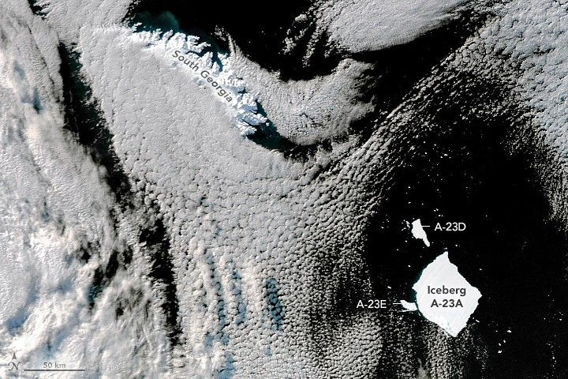

Antarctic Iceberg Downsizes
Almost 40 years after breaking from Antarctica’s Filchner Ice Shelf, a still-massive iceberg is showing its age. The berg, named A-23A, is shedding large chunks of ice as it drifts in the southern South Atlantic Ocean, about 2,400 kilometers (1,500 miles) north of its birthplace.
Beginning around March 1, 2025, the iceberg became lodged on the shallow continental shelf near South Georgia, the largest of nine remote islands that make up the South Georgia and South Sandwich Islands. Icebergs that reach this far north are increasingly exposed to warm water, waves, and seasonal weather—conditions that hasten their eventual breakup.
After losing pieces from its edges, A-23A wiggled free of the shelf by late May 2025 and resumed drifting toward the eastern side of South Georgia. It followed currents similar to those that carried the massive A-68A iceberg through the region in late 2020. The austral winter continued to damage A-23A, causing further ice loss along its sides.
Two newly calved pieces were large enough to be named and tracked by the U.S. National Ice Center (USNIC). Jan Lieser of Australia’s Bureau of Meteorology first identified the bergs using NovaSAR-1 radar data, and they were later confirmed by USNIC analyst Britney Fajardo using radar images from the European Space Agency’s Sentinel-1 mission acquired on July 15, 2025.
“Radar satellites can take images of the Earth during polar night and through all weather conditions, including heavy clouds and even smoke,” Lieser said.
As sunlight returned to Antarctica following the polar night, Lieser also monitored the icebergs using visible imagery. A break in cloud cover and longer daylight hours on July 22, 2025 allowed the MODIS (Moderate Resolution Imaging Spectroradiometer) on NASA’s Aqua satellite to capture a natural-color image of A-23A and the newly calved bergs near South Georgia.
At that time, A-23A covered about 2,510 square kilometers (969 square miles). The two new icebergs, named A-23D and A-23E, measured approximately 159 and 73 square kilometers (62 and 28 square miles), respectively.
Despite these losses, A-23A remains the largest freely drifting iceberg in any of the world’s oceans. Only D-15A is larger, but that iceberg is grounded in the cold Amery Sea off East Antarctica. As daylight continues to increase in the South Atlantic, scientists expect additional calving from what remains of A-23A as it drifts farther north.